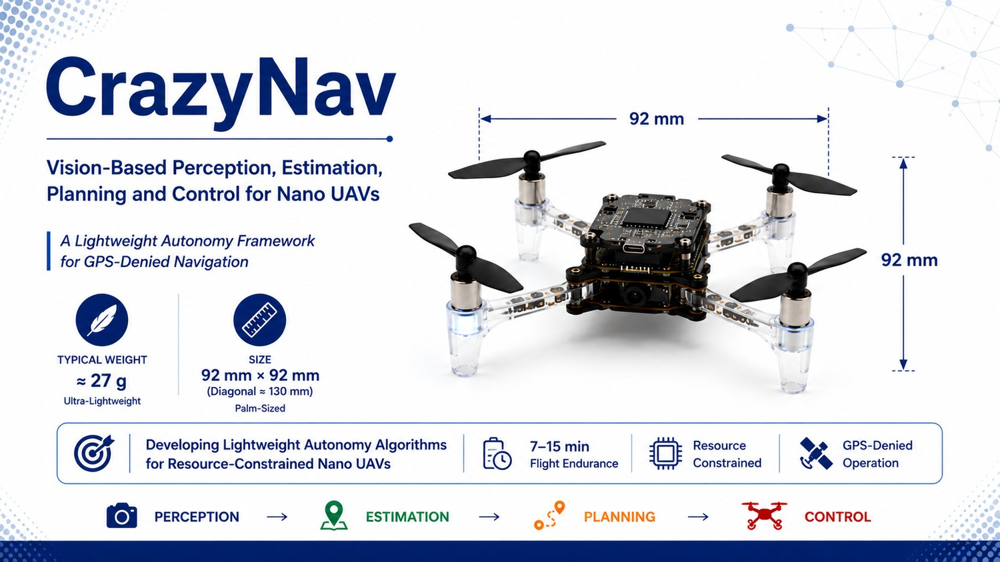

Supervised M.Sc. thesis · in progress
CrazyNaV: vision-guided navigation for nano UAVs without GPS
Indoor navigation for Crazyflie nano quadrotors that have no GPS and little onboard compute. The thesis is by Tiago Vieira, whom I supervise: "CRAZYNaV: Vision-Guided Navigation Planning in GPS-Denied Environment for Crazyflies."
The work is organised as one perception → estimation → planning → control pipeline. The research focus is the estimation stage: fusing landmark detections, distance sensing and the frontal camera into a state estimate whose noise statistics are adapted online, because vision measurements are noisy in ways that change with distance, lighting and motion. The pipeline is developed in Gazebo with a ROS bridge before hardware.
- Crazyflie
- Gazebo + ROS
- Landmark detection
- Adaptive state estimation
- GPS-denied
Status: pipeline and simulation set-up defined; flight results will be added when the thesis is complete.
